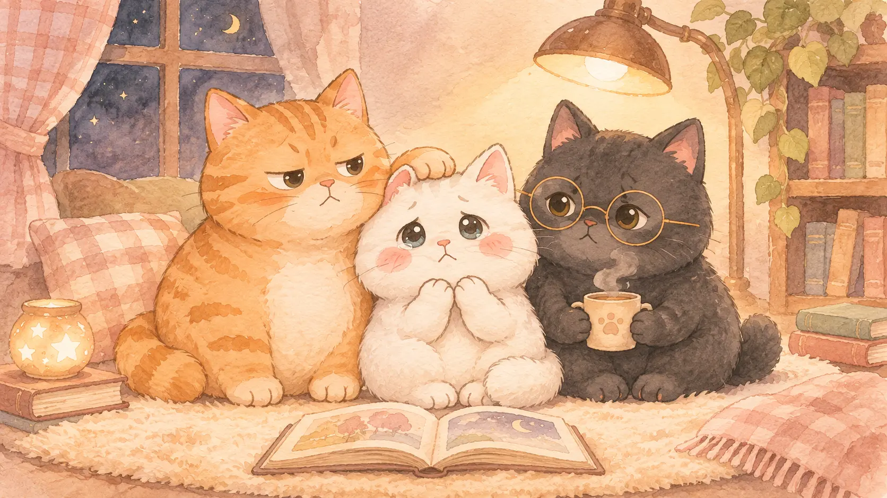

有我們在，慢慢說。

寫下故事照自己的步調，說出經過。
保護隱私告訴三喵哪些細節需要調整。
先聯繫確認若有採用機會，會先以 Email 聯絡。
A LETTER FROM THREE CATS
投稿之前，想先跟你說。
真的很謝謝你，願意把自己的故事交給三喵看見🐾
每一篇投稿我都會認真讀，但因為三喵也是一邊生活、一邊慢慢寫故事的人類鏟屎官，所以沒辦法保證每一篇都能回覆或被採用，這部分也先跟你說聲不好意思。
如果有機會把你的故事寫下來，一定會先透過 Email 跟你聯繫確認，確認彼此都沒問題後，才會開始後續創作。
為了保護你的隱私，也讓故事讀起來更完整、更有情緒，我會重新揣摩當時的心境，並視需要調整部分細節、情節順序或進行適度的文學改編。
所以當你送出投稿時，也代表你已經知道並同意這個創作方式囉!
最後還是想認真說一句：
謝謝你願意相信三喵，把那些可能很私密、很難說出口，或很重要的回憶交到這裡🧡🤎
你的故事，我會好好接住。
三喵先幫你把它放進故事小抽屜裡🐱🐱🐱
YOUR STORY, IN YOUR WORDS
故事，從你開始。
三個小段落，寫到想停下來喝口水也沒關係。